← 回股市觀察
逐檔技術線型分析
2026/11/13 · 成交金額上市前 50 名 ＋ 上櫃前 20 名（共 70 檔）· 公開資料整理
43675.12
加權指數 +583.25 點（+1.35%）
811 / 199
上市個股上漲／下跌家數
上漲 74.8% · 下跌 18.4% · 持平 6.8%（共 1084 檔）
584 / 230
上櫃個股上漲／下跌家數
上漲 66.7% · 下跌 26.3% · 持平 7.1%（共 876 檔）
統計範圍：當日成交金額上市前 50 名 ＋ 上櫃前 20 名（共 70 檔，皆為 4 位數代號的個股，不含 ETF／權證）。
兩個市場各自取前 N 名後合併呈現，卡片上標示市場別（上市／上櫃），清單也附市場分布。
條件統計：上市 上升趨勢：底底高 ＋ 頭頭高 0 檔、突破頸線 5 檔、底底高 0 檔、頭頭高 15 檔、站上月線 15 檔、月線向上 5 檔、外資買超 25 檔、量價攻擊（收紅＋大量） 18 檔、跌破前低（線型轉弱） 0 檔；上櫃 上升趨勢：底底高 ＋ 頭頭高 0 檔、突破頸線 0 檔、底底高 0 檔、頭頭高 6 檔、站上月線 8 檔、月線向上 1 檔、外資買超 10 檔、量價攻擊（收紅＋大量） 11 檔、跌破前低（線型轉弱） 0 檔。
五項全滿足（底底高＋頭頭高＋站上月線＋月線向上＋5 日線向上）：上市 無；上櫃 無。
資料日 2026/11/13。籌碼：上市為證交所三大法人、上櫃為櫃買中心三大法人；上櫃另附融資餘額。
每一檔都附上 K 線圖與線型說明：黃圈是轉折低點、粉圈是轉折高點、藍線是月線。
圖上兩條水平虛線、左側標數值：高點頸線（紅，連到最多「轉折高點」的那條水平線，代表上方壓力帶；收盤站上就算突破）與
低點頸線（綠，連到最多「轉折低點」的那條水平線，代表下方支撐帶；收盤跌破就算跌破）；
兩條線都只看最近 6 個轉折點、容忍同一價位帶 4%，連不到 2 個轉折點就不畫。
卡片的標籤可以點回上方對應清單，清單裡的股名也可以點到該檔。
本頁為公開資料（證交所每日收盤行情與三大法人、櫃買中心每日收盤行情與三大法人、Yahoo 股市日線）的整理與觀察，
不構成投資建議，不報牌、不預測、不下買賣決策。
大盤趨勢快篩（加權指數） 資料日 2026/11/13・來源：證交所公開資料
主狀態：跌破月線
前一交易日對照（11/12）：跌破月線（量比 20 1.08） → 今日跌破月線（量比 20 0.97）
指標、數值、判定（點開看 12 項明細：均線位置／排列、月線方向、頸線、轉折結構、位階、量價…）
加權指數今天漲 583.25 點（+1.35%），收 43,675.12、跌破月線 44,634.40；月線還在下彎，MA20 這條短均還沒收復，離高點頸線 47,372.65 還差 7.81%。
- 均線位置：4 條均線站上 2 條；沒站上的是 MA20 44,634.40（收盤比它低 2.15%）、MA60 46,215.19（收盤比它低 5.50%）
- 月線方向：月線 MA20 現在 44,634.40，比 5 個交易日前低 1,499.56 點 → 下彎
- 量能：集中市場成交 9,515.8 億，跟 5 日均量差不多（0.99 倍）、跟 20 日均量差不多（0.97 倍）
- 關鍵價位：高點頸線 47,372.65，還差 7.81%；低點頸線 38,610.95，還在下方 13.12%
- 大小型股：加權 +1.35%、櫃買 +1.99%，兩邊同向

圖說：加權指數日 K（與個股圖相同標記）：黃圈＝轉折低點、粉圈＝轉折高點、虛線小圈＝還沒確認的轉折、藍線＝月線 MA20、水平虛線＝高點／低點頸線。最後一根是資料日當天。
本區塊為公開資料的技術面觀察，不構成投資建議，
不報牌、不預測、不下買賣決策。成交金額為集中市場總成交金額（含 ETF／權證），
與頁首摘要的「上市個股成交金額」口徑不同。標籤是統計，不是評分、也不是推薦。
上市 vs 上櫃（同期快篩）
加權 +1.35% vs 櫃買 +1.99%（同向） → 同向
（兩個市場分開寫，不合併成一個數字；櫃買為 TPEX 公開資料）
櫃買歷史：TPEX 逐日回補 130 根；來源：櫃買中心 www/zh-tw/indexInfo/sectinx（逐日，官方；OpenAPI tpex_index 只回當月）
（TPEX OpenAPI 只回當月，故逐日回補；歷史不足就不算該條均線並標「資料不足」，不用錯數字）
近 20 個交易日大盤狀態回溯（最新在上）（點開看逐日主狀態／量比／量價象限）
用同一支程式回算最近 20 個交易日（主狀態 S1~S8 與量比 20 皆為當日收盤當時的判定，
不是事後調整）；量比 20 未公布的日子寫「—」。
好條件最多的（前 10）
不好條件最多的（前 10）
本期市場狀態：空頭（等權指數在 60 日均線之下）（空頭期間：趨勢類條件反向（回測後 20 日差距 −0.9% ~ −2.1%），本排行改用超跌反轉類（跌破前低／在月線之下／月線下彎））
好條件（4 項）：跌破前低、在月線之下、月線下彎、外資買超。
不好條件（5 項）：站上月線、月線向上、突破頸線、量價攻擊（收紅＋大量）、外資賣超。
兩邊都是同一組資料（日線結構＋當日收盤量價籌碼）算出來的「符合項目數」，只是方向相反；
條件數不是評分、也不是推薦，不構成投資建議。
量價攻擊（收紅＋大量）（29 上市 18／上櫃 11）
逐檔分析（70 檔）
區間或轉弱 成交金額 733.27 億・全榜第 1 名（上市第 1 名）
好條件 1/4：月線下彎
不好條件 2/5：站上月線、外資賣超

今天收紅、但成交量比平均少、站上月線 2345.5，離高點頸線 2590 還差 9.3%，轉折還沒走出明顯方向。
- 月線位置：收盤 2350 在月線 2345.5 之上；5 日線 2321 也在月線之下（短均在下）；月線走平或向下、5 日線向上
- 量能：成交量是 20 日均量的 0.87 倍，比 20 日均量少一些；收紅但量縮，量價背離
- 關鍵價位：高點頸線 2590 還沒突破，差 9.3%；最近轉折高點 2435（低於 3.5%）；最近轉折低點 2020（高於 16.3%）
- 轉折結構：低點 2375、2375、2020 與高點 2510、2590、2435 都沒有明顯遞增，屬於區間震盪或轉弱；還沒確認的轉折低點 11-04 2235；還沒確認的轉折高點 11-11 2395、11-12 2395（圖上虛線小圈）
區間或轉弱 成交金額 648.81 億・全榜第 2 名（上市第 2 名）
好條件 2/4：月線下彎、外資買超
不好條件 2/5：站上月線、量價攻擊（收紅＋大量）

今天帶量收紅、站上月線 3932.25，離高點頸線 5480 還差 24.8%，轉折還沒走出明顯方向。
- 月線位置：收盤 4120 在月線 3932.25 之上；5 日線 3903 也在月線之下（短均在下）；月線走平或向下、5 日線向上
- 量能：成交量是 20 日均量的 1.44 倍，比 20 日均量大不少；收紅又量增，量價配合
- 關鍵價位：高點頸線 5480 還沒突破，差 24.8%；最近轉折高點 4245（低於 2.9%）；最近轉折低點 3115（高於 32.3%）
- 轉折結構：低點 4430、4875、3115 與高點 5480、5165、4245 都沒有明顯遞增，屬於區間震盪或轉弱；還沒確認的轉折高點 11-10 4065、11-13 4235（圖上虛線小圈）
剛突破前高 成交金額 374.18 億・全榜第 3 名（上市第 3 名）
好條件 0/4：無
不好條件 5/5：站上月線、月線向上、突破頸線、量價攻擊（收紅＋大量）、外資賣超

今天帶量收紅、站上月線 67.48，已站上高點頸線 73.6，高點還在墊高（但底部沒同步墊高）。
- 月線位置：收盤 85.1 在月線 67.48 之上；5 日線 75.36 也在月線之上（短均在上）；月線向上、5 日線向上
- 量能：成交量是 20 日均量的 2.55 倍，比 20 日均量大不少；收紅又量增，量價配合
- 關鍵價位：高點頸線 73.6 已站上；最近轉折高點 70（高於 21.6%）；最近轉折低點 54.1（高於 57.3%）
- 轉折結構：高點 61.7、73.6、70 墊高 27.9%（頭頭高），但低點 56.6、58.8、54.1 沒有同步墊高；還沒確認的轉折高點 11-13 89.5（圖上虛線小圈）
剛突破前高 成交金額 321.37 億・全榜第 4 名（上市第 4 名）
好條件 1/4：月線下彎
不好條件 2/5：站上月線、外資賣超

今天收紅、站上月線 292.625，離高點頸線 350.5 還差 13.3%，高點還在墊高（但底部沒同步墊高）。
- 月線位置：收盤 304 在月線 292.625 之上；5 日線 292.4 也在月線之下（短均在下）；月線走平或向下、5 日線向上
- 量能：成交量是 20 日均量的 1.00 倍，跟 20 日均量差不多
- 關鍵價位：高點頸線 350.5 還沒突破，差 13.3%；最近轉折高點 325（低於 6.5%）；最近轉折低點 224.5（高於 35.4%）
- 轉折結構：高點 350.5、325.5、325 墊高 0.2%（頭頭高），但低點 223、295、224.5 沒有同步墊高；還沒確認的轉折高點 11-02 308、11-12 325.5（圖上虛線小圈）
區間或轉弱 成交金額 238.28 億・全榜第 5 名（上市第 5 名）
好條件 2/4：在月線之下、月線下彎
不好條件 1/5：外資賣超

今天帶量收黑、跌破月線 953.2，離高點頸線 1420 還差 44.7%，轉折還沒走出明顯方向。
- 月線位置：收盤 785 在月線 953.2 之下；5 日線 805.2 也在月線之下（短均在下）；月線走平或向下、5 日線走平或向下
- 量能：成交量是 20 日均量的 1.20 倍，比 20 日均量大不少；收黑卻量增，量價背離
- 關鍵價位：高點頸線 1420 還沒突破，差 44.7%；最近轉折高點 1180（低於 33.5%）；最近轉折低點 720（高於 9.0%）
- 轉折結構：低點 932、1040、720 與高點 1200、1420、1180 都沒有明顯遞增，屬於區間震盪或轉弱；還沒確認的轉折低點 11-13 784；還沒確認的轉折高點 11-02 1020、11-12 894（圖上虛線小圈）
剛突破前高 成交金額 232.77 億・全榜第 6 名（上市第 6 名）
好條件 2/4：月線下彎、外資買超
不好條件 2/5：站上月線、量價攻擊（收紅＋大量）

今天帶量收紅、站上月線 7456.75，離高點頸線 8750 還差 1.6%，高點還在墊高（但底部沒同步墊高）。
- 月線位置：收盤 8610 在月線 7456.75 之上；5 日線 7646 也在月線之上（短均在上）；月線走平或向下、5 日線向上
- 量能：成交量是 20 日均量的 1.07 倍，比 20 日均量大一些；收紅又量增，量價配合
- 關鍵價位：高點頸線 8750 還沒突破，差 1.6%；最近轉折高點 8255（高於 4.3%）；最近轉折低點 5765（高於 49.3%）
- 轉折結構：高點 8750、8490、8255 墊高 4.7%（頭頭高），但低點 7065、7200、5765 沒有同步墊高；還沒確認的轉折低點 11-04 6390；還沒確認的轉折高點 11-13 8645（圖上虛線小圈）
區間或轉弱 成交金額 193.68 億・全榜第 7 名（上市第 7 名）
好條件 3/4：在月線之下、月線下彎、外資買超
不好條件 0/5：無

今天收黑、跌破月線 414.675，離高點頸線 537 還差 29.8%，轉折還沒走出明顯方向。
- 月線位置：收盤 377 在月線 414.675 之下；5 日線 380.7 也在月線之下（短均在下）；月線走平或向下、5 日線走平或向下
- 量能：成交量是 20 日均量的 1.02 倍，跟 20 日均量差不多
- 關鍵價位：高點頸線 537 還沒突破，差 29.8%；最近轉折高點 497.5（低於 24.2%）；最近轉折低點 324（高於 16.4%）
- 轉折結構：低點 488、412、324 與高點 533、537、497.5 都沒有明顯遞增，屬於區間震盪或轉弱；還沒確認的轉折低點 11-13 371.5；還沒確認的轉折高點 11-10 402、11-12 417（圖上虛線小圈）
高點墊高、底部不穩 成交金額 181.74 億・全榜第 9 名（上市第 8 名）
好條件 2/4：在月線之下、月線下彎
不好條件 1/5：外資賣超

今天收黑、成交量也比平均少、跌破月線 1387，離高點頸線 2115 還差 41.4%，高點還在墊高（但底部沒同步墊高）。
- 月線位置：收盤 1240 在月線 1387 之下；5 日線 1242 也在月線之下（短均在下）；月線走平或向下、5 日線向上
- 量能：成交量是 20 日均量的 0.92 倍，比 20 日均量少一些
- 關鍵價位：高點頸線 2115 還沒突破，差 41.4%；最近轉折高點 2115（低於 41.4%）；最近轉折低點 1020（高於 21.6%）
- 轉折結構：高點 1885、1965、2115 墊高 12.2%（頭頭高），但低點 1560、1810、1020 沒有同步墊高；還沒確認的轉折低點 11-11 1230、11-13 1225；還沒確認的轉折高點 11-12 1335（圖上虛線小圈）
區間或轉弱 成交金額 174.11 億・全榜第 10 名（上市第 9 名）
好條件 3/4：在月線之下、月線下彎、外資買超
不好條件 0/5：無

今天帶量收黑、跌破月線 6100.25，離高點頸線 6985 還差 23.5%，轉折還沒走出明顯方向。
- 月線位置：收盤 5345 在月線 6100.25 之下；5 日線 5720 也在月線之下（短均在下）；月線走平或向下、5 日線走平或向下
- 量能：成交量是 20 日均量的 1.43 倍，比 20 日均量大不少；收黑卻量增，量價背離
- 關鍵價位：高點頸線 6985 還沒突破，差 23.5%；最近轉折高點 6595（低於 19.0%）；最近轉折低點 4970（高於 7.5%）
- 轉折結構：低點 6760、5710、4970 與高點 6985、6655、6595 都沒有明顯遞增，屬於區間震盪或轉弱；還沒確認的轉折低點 11-04 5800、11-13 5290；還沒確認的轉折高點 11-11 6360（圖上虛線小圈）
世芯-KY 3661 上市
4020 +345.0
剛突破前高 成交金額 169.43 億・全榜第 11 名（上市第 10 名）
好條件 2/4：月線下彎、外資買超
不好條件 2/5：站上月線、量價攻擊（收紅＋大量）

今天帶量收紅、站上月線 3476，離高點頸線 4490 還差 10.5%，高點還在墊高（但底部沒同步墊高）。
- 月線位置：收盤 4020 在月線 3476 之上；5 日線 3575 也在月線之上（短均在上）；月線走平或向下、5 日線向上
- 量能：成交量是 20 日均量的 2.09 倍，比 20 日均量大不少；收紅又量增，量價配合
- 關鍵價位：高點頸線 4490 還沒突破，差 10.5%；最近轉折高點 3825（高於 5.1%）；最近轉折低點 2665（高於 50.8%）
- 轉折結構：高點 4490、3835、3825 墊高 5.6%（頭頭高），但低點 3585、3260、2665 沒有同步墊高；還沒確認的轉折高點 11-13 4040（圖上虛線小圈）
區間或轉弱 成交金額 156.83 億・全榜第 13 名（上市第 11 名）
好條件 3/4：在月線之下、月線下彎、外資買超
不好條件 0/5：無

今天收紅、但成交量比平均少、跌破月線 477.1，離高點頸線 686 還差 40.1%，轉折還沒走出明顯方向。
- 月線位置：收盤 411 在月線 477.1 之下；5 日線 414 也在月線之下（短均在下）；月線走平或向下、5 日線走平或向下
- 量能：成交量是 20 日均量的 0.93 倍，比 20 日均量少一些；收紅但量縮，量價背離
- 關鍵價位：高點頸線 686 還沒突破，差 40.1%；最近轉折高點 442（低於 7.0%）；最近轉折低點 364.5（高於 12.8%）
- 轉折結構：低點 548、506、364.5 與高點 601、686、442 都沒有明顯遞增，屬於區間震盪或轉弱；還沒確認的轉折低點 11-12 405.5；還沒確認的轉折高點 11-12 441（圖上虛線小圈）
區間或轉弱 成交金額 155.93 億・全榜第 14 名（上市第 12 名）
好條件 2/4：在月線之下、月線下彎
不好條件 1/5：外資賣超

今天收紅、但成交量比平均少、跌破月線 4632.75，離高點頸線 6325 還差 33.4%，轉折還沒走出明顯方向。
- 月線位置：收盤 4215 在月線 4632.75 之下；5 日線 4251 也在月線之下（短均在下）；月線走平或向下、5 日線走平或向下
- 量能：成交量是 20 日均量的 0.93 倍，比 20 日均量少一些；收紅但量縮，量價背離
- 關鍵價位：高點頸線 6325 還沒突破，差 33.4%；最近轉折高點 5295（低於 20.4%）；最近轉折低點 3690（高於 14.2%）
- 轉折結構：低點 4855、4930、3690 與高點 6325、5485、5295 都沒有明顯遞增，屬於區間震盪或轉弱；還沒確認的轉折低點 11-12 4065；還沒確認的轉折高點 11-02 4835、11-11 4565（圖上虛線小圈）
區間或轉弱 成交金額 140.11 億・全榜第 15 名（上市第 13 名）
好條件 3/4：在月線之下、月線下彎、外資買超
不好條件 1/5：量價攻擊（收紅＋大量）

今天帶量收紅、跌破月線 1055.6，離高點頸線 1310 還差 21.4%，轉折還沒走出明顯方向。
- 月線位置：收盤 1030 在月線 1055.6 之下；5 日線 986.4 也在月線之下（短均在下）；月線走平或向下、5 日線向上
- 量能：成交量是 20 日均量的 1.27 倍，比 20 日均量大不少；收紅又量增，量價配合
- 關鍵價位：高點頸線 1310 還沒突破，差 21.4%；最近轉折高點 1190（低於 13.4%）；最近轉折低點 782（高於 31.7%）
- 轉折結構：低點 950、1120、782 與高點 1310、1295、1190 都沒有明顯遞增，屬於區間震盪或轉弱；還沒確認的轉折低點 11-12 968；還沒確認的轉折高點 11-02 1080、11-12 1085（圖上虛線小圈）
區間或轉弱 成交金額 123.25 億・全榜第 17 名（上市第 14 名）
好條件 2/4：在月線之下、月線下彎
不好條件 1/5：外資賣超

今天收紅、但成交量比平均少、跌破月線 633.65，離高點頸線 765 還差 21.8%，轉折還沒走出明顯方向。
- 月線位置：收盤 598 在月線 633.65 之下；5 日線 593.4 也在月線之下（短均在下）；月線走平或向下、5 日線走平或向下
- 量能：成交量是 20 日均量的 0.85 倍，比 20 日均量少一些；收紅但量縮，量價背離
- 關鍵價位：高點頸線 765 還沒突破，差 21.8%；最近轉折高點 709（低於 15.7%）；最近轉折低點 515（高於 16.1%）
- 轉折結構：低點 715、639、515 與高點 765、699、709 都沒有明顯遞增，屬於區間震盪或轉弱；還沒確認的轉折低點 10-30 624、11-12 580；還沒確認的轉折高點 11-02 692、11-12 630（圖上虛線小圈）
區間或轉弱 成交金額 122.03 億・全榜第 18 名（上市第 15 名）
好條件 3/4：在月線之下、月線下彎、外資買超
不好條件 1/5：量價攻擊（收紅＋大量）

今天帶量收紅、跌破月線 1152.7，離高點頸線 1560 還差 37.4%，轉折還沒走出明顯方向。
- 月線位置：收盤 977 在月線 1152.7 之下；5 日線 993.4 也在月線之下（短均在下）；月線走平或向下、5 日線走平或向下
- 量能：成交量是 20 日均量的 1.20 倍，比 20 日均量大不少；收紅又量增，量價配合
- 關鍵價位：高點頸線 1560 還沒突破，差 37.4%；最近轉折高點 1400（低於 30.2%）；最近轉折低點 867（高於 12.7%）
- 轉折結構：低點 1025、1050、867 與高點 1125、1560、1400 都沒有明顯遞增，屬於區間震盪或轉弱；還沒確認的轉折低點 11-12 972；還沒確認的轉折高點 11-02 1220、11-11 1080（圖上虛線小圈）
高點墊高、底部不穩 成交金額 120.14 億・全榜第 19 名（上市第 16 名）
好條件 2/4：在月線之下、月線下彎
不好條件 2/5：量價攻擊（收紅＋大量）、外資賣超
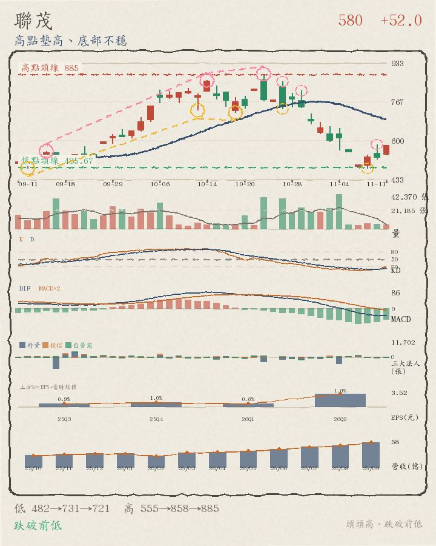
今天帶量收紅、跌破月線 661.6，離高點頸線 885 還差 39.8%，高點還在墊高（但底部沒同步墊高）。
- 月線位置：收盤 533 在月線 661.6 之下；5 日線 538.8 也在月線之下（短均在下）；月線走平或向下、5 日線走平或向下
- 量能：成交量是 20 日均量的 1.26 倍，比 20 日均量大不少；收紅又量增，量價配合
- 關鍵價位：高點頸線 885 還沒突破，差 39.8%；最近轉折高點 885（低於 39.8%）；最近轉折低點 481.5（高於 10.7%）
- 轉折結構：高點 555、858、885 墊高 59.5%（頭頭高），但低點 731、721、481.5 沒有同步墊高；還沒確認的轉折低點 11-12 522；還沒確認的轉折高點 11-10 584、11-12 602（圖上虛線小圈）
區間或轉弱 成交金額 116.03 億・全榜第 20 名（上市第 17 名）
好條件 2/4：月線下彎、外資買超
不好條件 2/5：站上月線、量價攻擊（收紅＋大量）

今天帶量收紅、站上月線 2995.25，離高點頸線 3700 還差 17.8%，轉折還沒走出明顯方向。
- 月線位置：收盤 3040 在月線 2995.25 之上；5 日線 2837 也在月線之下（短均在下）；月線走平或向下、5 日線向上
- 量能：成交量是 20 日均量的 1.25 倍，比 20 日均量大不少；收紅又量增，量價配合
- 關鍵價位：高點頸線 3700 還沒突破，差 17.8%；最近轉折高點 3450（低於 11.9%）；最近轉折低點 2310（高於 31.6%）
- 轉折結構：低點 3050、2310、2310 與高點 3600、3700、3450 都沒有明顯遞增，屬於區間震盪或轉弱；還沒確認的轉折低點 10-30 2885、11-12 2750；還沒確認的轉折高點 11-03 3115、11-12 3060（圖上虛線小圈）
區間或轉弱 成交金額 114.77 億・全榜第 21 名（上市第 18 名）
好條件 3/4：在月線之下、月線下彎、外資買超
不好條件 0/5：無

今天收紅、但成交量比平均少、跌破月線 5542.5，離高點頸線 7460 還差 28.8%，轉折還沒走出明顯方向。
- 月線位置：收盤 5310 在月線 5542.5 之下；5 日線 5136 也在月線之下（短均在下）；月線走平或向下、5 日線向上
- 量能：成交量是 20 日均量的 0.83 倍，比 20 日均量少很多；收紅但量縮，量價背離
- 關鍵價位：高點頸線 7460 還沒突破，差 28.8%；最近轉折高點 6370（低於 16.6%）；最近轉折低點 4075（高於 30.3%）
- 轉折結構：低點 6355、5970、4075 與高點 6750、7460、6370 都沒有明顯遞增，屬於區間震盪或轉弱；還沒確認的轉折高點 11-13 5560（圖上虛線小圈）
區間或轉弱 成交金額 107.03 億・全榜第 22 名（上市第 19 名）
好條件 2/4：在月線之下、月線下彎
不好條件 2/5：量價攻擊（收紅＋大量）、外資賣超

今天帶量收紅、跌破月線 31.835，離高點頸線 43.55 還差 30.2%，轉折還沒走出明顯方向。
- 月線位置：收盤 30.4 在月線 31.835 之下；5 日線 28.83 也在月線之下（短均在下）；月線走平或向下、5 日線向上
- 量能：成交量是 20 日均量的 1.30 倍，比 20 日均量大不少；收紅又量增，量價配合
- 關鍵價位：高點頸線 43.55 還沒突破，差 30.2%；最近轉折高點 36.65（低於 17.1%）；最近轉折低點 24.55（高於 23.8%）
- 轉折結構：低點 33.75、34.45、24.55 與高點 43.55、37.8、36.65 都沒有明顯遞增，屬於區間震盪或轉弱；還沒確認的轉折高點 11-10 29.25、11-12 31.5（圖上虛線小圈）
區間或轉弱 成交金額 106.75 億・全榜第 24 名（上市第 20 名）
好條件 3/4：在月線之下、月線下彎、外資買超
不好條件 0/5：無

今天收紅、但成交量比平均少、跌破月線 113.03，離高點頸線 168.5 還差 39.8%，轉折還沒走出明顯方向。
- 月線位置：收盤 101.5 在月線 113.03 之下；5 日線 100.74 也在月線之下（短均在下）；月線走平或向下、5 日線走平或向下
- 量能：成交量是 20 日均量的 0.69 倍，比 20 日均量少很多；收紅但量縮，量價背離
- 關鍵價位：高點頸線 168.5 還沒突破，差 39.8%；最近轉折高點 165（低於 38.5%）；最近轉折低點 88.6（高於 14.6%）
- 轉折結構：低點 135、151.5、88.6 與高點 145.5、168.5、165 都沒有明顯遞增，屬於區間震盪或轉弱；還沒確認的轉折低點 10-30 107；還沒確認的轉折高點 11-12 107.5（圖上虛線小圈）
高點墊高、底部不穩 成交金額 100.1 億・全榜第 26 名（上市第 21 名）
好條件 2/4：在月線之下、月線下彎
不好條件 2/5：量價攻擊（收紅＋大量）、外資賣超

今天帶量收紅、跌破月線 206.675，離高點頸線 266 還差 22.7%，高點還在墊高（但底部沒同步墊高）。
- 月線位置：收盤 205.5 在月線 206.675 之下；5 日線 190.2 也在月線之下（短均在下）；月線走平或向下、5 日線向上
- 量能：成交量是 20 日均量的 1.60 倍，比 20 日均量大不少；收紅又量增，量價配合
- 關鍵價位：高點頸線 266 還沒突破，差 22.7%；最近轉折高點 266（低於 22.7%）；最近轉折低點 149（高於 37.9%）
- 轉折結構：高點 235、261、266 墊高 13.2%（頭頭高），但低點 219、228、149 沒有同步墊高；還沒確認的轉折高點 11-02 209、11-13 215.5（圖上虛線小圈）
區間或轉弱 成交金額 99.33 億・全榜第 27 名（上市第 22 名）
好條件 2/4：在月線之下、月線下彎
不好條件 1/5：外資賣超

今天帶量收黑、跌破月線 896.9，離高點頸線 1090 還差 24.4%，轉折還沒走出明顯方向。
- 月線位置：收盤 824 在月線 896.9 之下；5 日線 824.8 也在月線之下（短均在下）；月線走平或向下、5 日線向上
- 量能：成交量是 20 日均量的 2.24 倍，比 20 日均量大不少；收黑卻量增，量價背離
- 關鍵價位：高點頸線 1090 還沒突破，差 24.4%；最近轉折高點 1030（低於 20.0%）；最近轉折低點 700（高於 17.7%）
- 轉折結構：低點 884、700、700 與高點 1090、1030、1030 都沒有明顯遞增，屬於區間震盪或轉弱；還沒確認的轉折低點 11-13 800；還沒確認的轉折高點 11-12 960（圖上虛線小圈）
區間或轉弱 成交金額 98.25 億・全榜第 28 名（上市第 23 名）
好條件 3/4：在月線之下、月線下彎、外資買超
不好條件 0/5：無

今天收紅、跌破月線 242.85，離高點頸線 266.5 還差 9.6%，轉折還沒走出明顯方向。
- 月線位置：收盤 241 在月線 242.85 之下；5 日線 240.7 也在月線之下（短均在下）；月線走平或向下、5 日線向上
- 量能：成交量是 20 日均量的 0.96 倍，跟 20 日均量差不多
- 關鍵價位：高點頸線 266.5 還沒突破，差 9.6%；最近轉折高點 247.5（低於 2.6%）；最近轉折低點 212.5（高於 13.4%）
- 轉折結構：低點 247、237、212.5 與高點 266.5、253.5、247.5 都沒有明顯遞增，屬於區間震盪或轉弱；還沒確認的轉折低點 11-11 236、11-13 238；還沒確認的轉折高點 11-02 252、11-12 245（圖上虛線小圈）
區間或轉弱 成交金額 95.01 億・全榜第 29 名（上市第 24 名）
好條件 2/4：在月線之下、月線下彎
不好條件 1/5：外資賣超

今天收紅、但成交量比平均少、跌破月線 486.425，離高點頸線 614 還差 28.3%，轉折還沒走出明顯方向。
- 月線位置：收盤 440 在月線 486.425 之下；5 日線 431.9 也在月線之下（短均在下）；月線走平或向下、5 日線向上
- 量能：成交量是 20 日均量的 0.74 倍，比 20 日均量少很多；收紅但量縮，量價背離
- 關鍵價位：高點頸線 614 還沒突破，差 28.3%；最近轉折高點 614（低於 28.3%）；最近轉折低點 355（高於 23.9%）
- 轉折結構：低點 463.5、518、355 與高點 505、613、614 都沒有明顯遞增，屬於區間震盪或轉弱；還沒確認的轉折低點 11-12 429；還沒確認的轉折高點 11-02 499、11-12 466.5（圖上虛線小圈）
剛突破前高 成交金額 86.5 億・全榜第 31 名（上市第 25 名）
好條件 2/4：月線下彎、外資買超
不好條件 1/5：站上月線
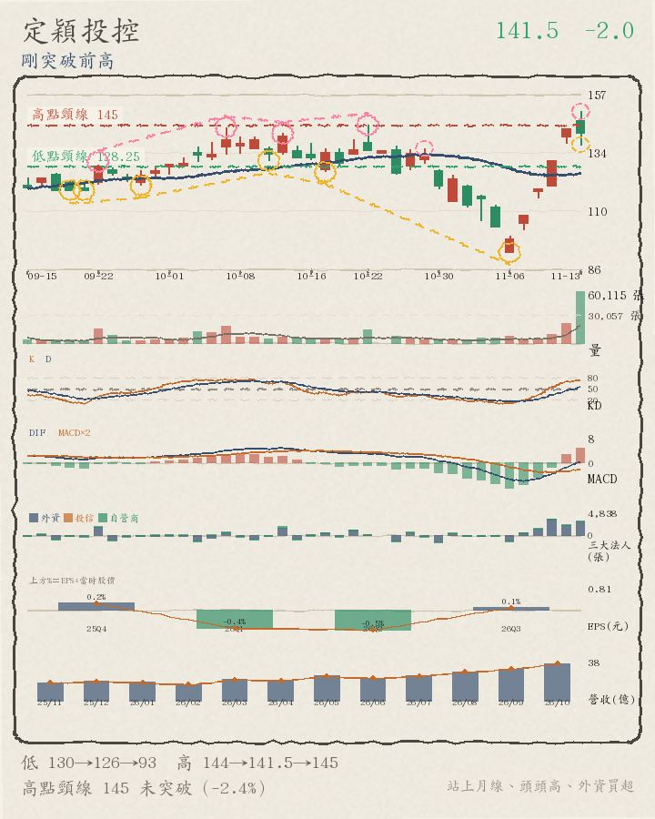
今天帶量收黑、站上月線 125.285，離高點頸線 145 還差 2.4%，高點還在墊高（但底部沒同步墊高）。
- 月線位置：收盤 141.5 在月線 125.285 之上；5 日線 128.6 也在月線之上（短均在上）；月線走平或向下、5 日線向上
- 量能：成交量是 20 日均量的 8.88 倍，比 20 日均量大不少；收黑卻量增，量價背離
- 關鍵價位：高點頸線 145 還沒突破，差 2.4%；最近轉折高點 145（低於 2.4%）；最近轉折低點 93.2（高於 51.8%）
- 轉折結構：高點 144、141.5、145 墊高 3.8%（頭頭高），但低點 130.5、126、93.2 沒有同步墊高；還沒確認的轉折低點 11-13 137；還沒確認的轉折高點 10-29 135.5、11-13 150.5（圖上虛線小圈）
區間或轉弱 成交金額 80.48 億・全榜第 32 名（上市第 26 名）
好條件 3/4：在月線之下、月線下彎、外資買超
不好條件 0/5：無

今天收紅、跌破月線 339.55，離高點頸線 431.5 還差 33.7%，轉折還沒走出明顯方向。
- 月線位置：收盤 286 在月線 339.55 之下；5 日線 283.7 也在月線之下（短均在下）；月線走平或向下、5 日線走平或向下
- 量能：成交量是 20 日均量的 0.98 倍，跟 20 日均量差不多
- 關鍵價位：高點頸線 431.5 還沒突破，差 33.7%；最近轉折高點 431.5（低於 33.7%）；最近轉折低點 253.5（高於 12.8%）
- 轉折結構：低點 376.5、355.5、253.5 與高點 431.5、422、431.5 都沒有明顯遞增，屬於區間震盪或轉弱；還沒確認的轉折低點 11-12 272；還沒確認的轉折高點 11-11 307（圖上虛線小圈）
區間或轉弱 成交金額 76.83 億・全榜第 34 名（上市第 27 名）
好條件 2/4：在月線之下、月線下彎
不好條件 1/5：外資賣超

今天帶量收黑、跌破月線 1654.25，離高點頸線 2145 還差 29.1%，轉折還沒走出明顯方向。
- 月線位置：收盤 1520 在月線 1654.25 之下；5 日線 1514 也在月線之下（短均在下）；月線走平或向下、5 日線向上
- 量能：成交量是 20 日均量的 1.17 倍，比 20 日均量大不少；收黑卻量增，量價背離
- 關鍵價位：高點頸線 2145 還沒突破，差 29.1%；最近轉折高點 1875（低於 18.9%）；最近轉折低點 1245（高於 22.1%）
- 轉折結構：低點 1970、1910、1245 與高點 2145、2055、1875 都沒有明顯遞增，屬於區間震盪或轉弱；還沒確認的轉折低點 11-13 1505；還沒確認的轉折高點 11-12 1665（圖上虛線小圈）
GIS-KY 6456 上市
101.5 +0.0
區間或轉弱 成交金額 72.46 億・全榜第 35 名（上市第 28 名）
好條件 1/4：月線下彎
不好條件 2/5：站上月線、外資賣超
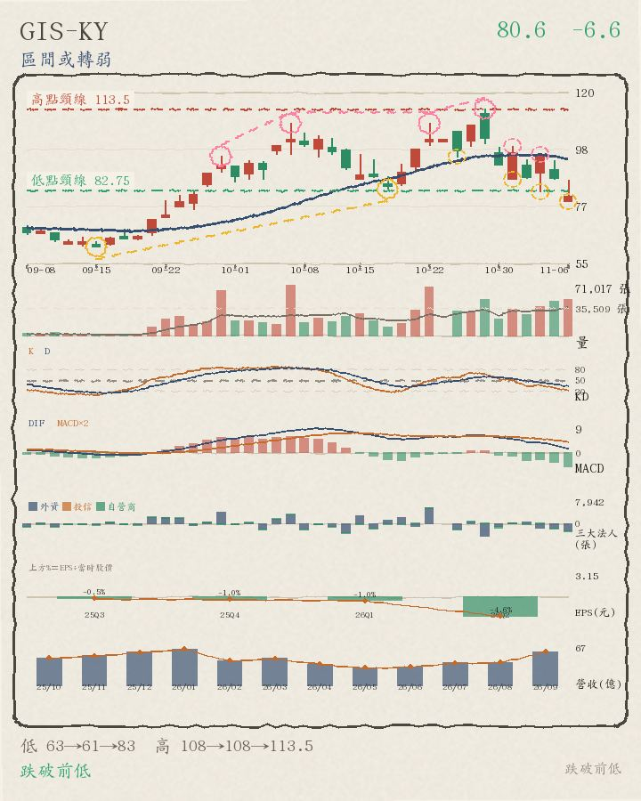
今天帶量收黑、站上月線 93.49，離高點頸線 113.5 還差 10.6%，轉折還沒走出明顯方向。
- 月線位置：收盤 101.5 在月線 93.49 之上；5 日線 91.28 也在月線之下（短均在下）；月線走平或向下、5 日線向上
- 量能：成交量是 20 日均量的 1.88 倍，比 20 日均量大不少；收黑卻量增，量價背離
- 關鍵價位：高點頸線 113.5 還沒突破，差 10.6%；最近轉折高點 113.5（低於 10.6%）；最近轉折低點 75.4（高於 34.6%）
- 轉折結構：低點 61.4、83.3、75.4 與高點 108、108、113.5 都沒有明顯遞增，屬於區間震盪或轉弱；還沒確認的轉折低點 11-02 87、11-04 82.2；還沒確認的轉折高點 11-04 96.4、11-13 111（圖上虛線小圈）
區間或轉弱 成交金額 72.3 億・全榜第 36 名（上市第 29 名）
好條件 2/4：在月線之下、月線下彎
不好條件 1/5：外資賣超

今天帶量收黑、跌破月線 9161.25，離高點頸線 13500 還差 41.6%，轉折還沒走出明顯方向。
- 月線位置：收盤 7880 在月線 9161.25 之下；5 日線 8270 也在月線之下（短均在下）；月線走平或向下、5 日線走平或向下
- 量能：成交量是 20 日均量的 1.47 倍，比 20 日均量大不少；收黑卻量增，量價背離
- 關鍵價位：高點頸線 13500 還沒突破，差 41.6%；最近轉折高點 10290（低於 23.4%）；最近轉折低點 7200（高於 9.4%）
- 轉折結構：低點 11700、9500、7200 與高點 13500、10580、10290 都沒有明顯遞增，屬於區間震盪或轉弱；還沒確認的轉折低點 11-13 7810；還沒確認的轉折高點 11-03 9850、11-12 9100（圖上虛線小圈）
區間或轉弱 成交金額 69.94 億・全榜第 38 名（上市第 30 名）
好條件 3/4：在月線之下、月線下彎、外資買超
不好條件 0/5：無

今天收紅、但成交量比平均少、跌破月線 1780，離高點頸線 2335 還差 30.0%，轉折還沒走出明顯方向。
- 月線位置：收盤 1635 在月線 1780 之下；5 日線 1642 也在月線之下（短均在下）；月線走平或向下、5 日線走平或向下
- 量能：成交量是 20 日均量的 0.85 倍，比 20 日均量少一些；收紅但量縮，量價背離
- 關鍵價位：高點頸線 2335 還沒突破，差 30.0%；最近轉折高點 1990（低於 17.8%）；最近轉折低點 1485（高於 10.1%）
- 轉折結構：低點 2080、1795、1485 與高點 2335、2020、1990 都沒有明顯遞增，屬於區間震盪或轉弱；還沒確認的轉折低點 11-02 1765、11-12 1550；還沒確認的轉折高點 11-10 1730、11-12 1715（圖上虛線小圈）
高點墊高、底部不穩 成交金額 67.49 億・全榜第 39 名（上市第 31 名）
好條件 1/4：外資買超
不好條件 4/5：站上月線、月線向上、突破頸線、量價攻擊（收紅＋大量）
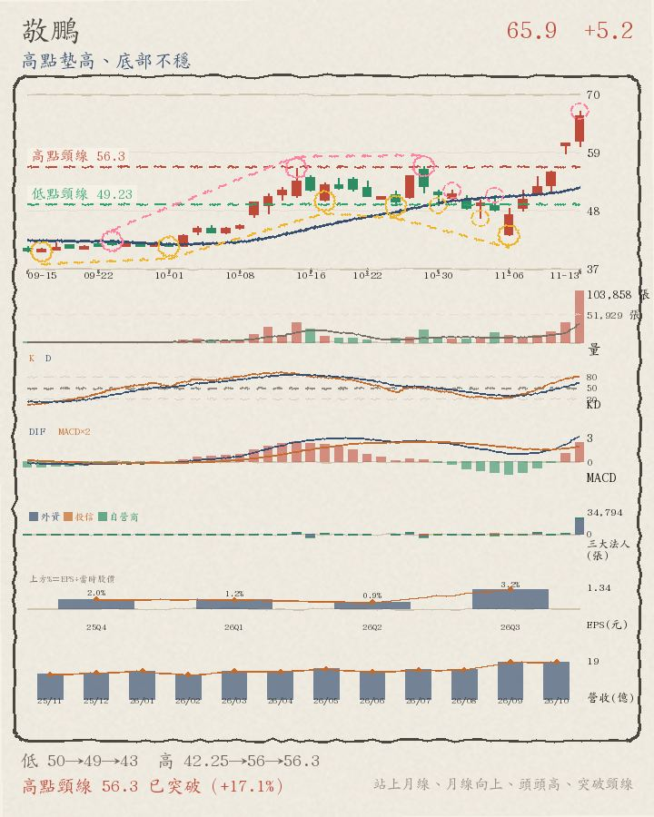
今天帶量收紅、站上月線 52.338，已站上高點頸線 56.3，高點還在墊高（但底部沒同步墊高）。
- 月線位置：收盤 65.9 在月線 52.338 之上；5 日線 56.9 也在月線之上（短均在上）；月線向上、5 日線向上
- 量能：成交量是 20 日均量的 6.91 倍，比 20 日均量大不少；收紅又量增，量價配合
- 關鍵價位：高點頸線 56.3 已站上；最近轉折高點 56.3（高於 17.1%）；最近轉折低點 43.35（高於 52.0%）
- 轉折結構：高點 42.25、56、56.3 墊高 33.3%（頭頭高），但低點 49.8、48.9、43.35 沒有同步墊高；還沒確認的轉折低點 10-30 49、11-04 46.6；還沒確認的轉折高點 11-05 50.9、11-13 66.7（圖上虛線小圈）
區間或轉弱 成交金額 66.23 億・全榜第 40 名（上市第 32 名）
好條件 2/4：在月線之下、月線下彎
不好條件 2/5：量價攻擊（收紅＋大量）、外資賣超

今天收紅、跌破月線 1461.5，離高點頸線 1800 還差 20.0%，轉折還沒走出明顯方向。
- 月線位置：收盤 1440 在月線 1461.5 之下；5 日線 1402 也在月線之下（短均在下）；月線走平或向下、5 日線向上
- 量能：成交量是 20 日均量的 1.03 倍，跟 20 日均量差不多
- 關鍵價位：高點頸線 1800 還沒突破，差 20.0%；最近轉折高點 1770（低於 18.6%）；最近轉折低點 1165（高於 23.6%）
- 轉折結構：低點 1470、1455、1165 與高點 1665、1800、1770 都沒有明顯遞增，屬於區間震盪或轉弱；還沒確認的轉折低點 11-04 1275、11-12 1360；還沒確認的轉折高點 11-02 1535、11-12 1575（圖上虛線小圈）
區間或轉弱 成交金額 66.09 億・全榜第 41 名（上市第 33 名）
好條件 3/4：在月線之下、月線下彎、外資買超
不好條件 1/5：量價攻擊（收紅＋大量）

今天帶量收紅、跌破月線 649.025，離高點頸線 888 還差 42.3%，轉折還沒走出明顯方向。
- 月線位置：收盤 512 在月線 649.025 之下；5 日線 517.4 也在月線之下（短均在下）；月線走平或向下、5 日線走平或向下
- 量能：成交量是 20 日均量的 1.06 倍，比 20 日均量大一些；收紅又量增，量價配合
- 關鍵價位：高點頸線 888 還沒突破，差 42.3%；最近轉折高點 859（低於 40.4%）；最近轉折低點 475.5（高於 7.7%）
- 轉折結構：低點 726、704、475.5 與高點 881、888、859 都沒有明顯遞增，屬於區間震盪或轉弱；還沒確認的轉折低點 11-04 526、11-13 504；還沒確認的轉折高點 10-29 778、11-12 571（圖上虛線小圈）
區間或轉弱 成交金額 63.07 億・全榜第 43 名（上市第 34 名）
好條件 3/4：在月線之下、月線下彎、外資買超
不好條件 0/5：無

今天收紅、但成交量比平均少、跌破月線 1037.2，離高點頸線 1330 還差 25.8%，轉折還沒走出明顯方向。
- 月線位置：收盤 987 在月線 1037.2 之下；5 日線 941.6 也在月線之下（短均在下）；月線走平或向下、5 日線向上
- 量能：成交量是 20 日均量的 0.76 倍，比 20 日均量少很多；收紅但量縮，量價背離
- 關鍵價位：高點頸線 1330 還沒突破，差 25.8%；最近轉折高點 1330（低於 25.8%）；最近轉折低點 762（高於 29.5%）
- 轉折結構：低點 1010、1005、762 與高點 1220、1330、1330 都沒有明顯遞增，屬於區間震盪或轉弱；還沒確認的轉折高點 11-12 1085（圖上虛線小圈）
區間或轉弱 成交金額 60.45 億・全榜第 44 名（上市第 35 名）
好條件 2/4：在月線之下、月線下彎
不好條件 1/5：外資賣超

今天收黑、成交量也比平均少、跌破月線 148.1，離高點頸線 184 還差 32.1%，轉折還沒走出明顯方向。
- 月線位置：收盤 125 在月線 148.1 之下；5 日線 131.3 也在月線之下（短均在下）；月線走平或向下、5 日線走平或向下
- 量能：成交量是 20 日均量的 0.71 倍，比 20 日均量少很多
- 關鍵價位：高點頸線 184 還沒突破，差 32.1%；最近轉折高點 142（低於 12.0%）；最近轉折低點 115（高於 8.7%）
- 轉折結構：低點 151、151、115 與高點 184、178.5、142 都沒有明顯遞增，屬於區間震盪或轉弱；還沒確認的轉折低點 11-11 127、11-13 125；還沒確認的轉折高點 11-12 141（圖上虛線小圈）
區間或轉弱 成交金額 58.86 億・全榜第 45 名（上市第 36 名）
好條件 3/4：在月線之下、月線下彎、外資買超
不好條件 0/5：無

今天帶量收黑、跌破月線 248.275，離高點頸線 330 還差 35.3%，轉折還沒走出明顯方向。
- 月線位置：收盤 213.5 在月線 248.275 之下；5 日線 219.1 也在月線之下（短均在下）；月線走平或向下、5 日線走平或向下
- 量能：成交量是 20 日均量的 1.20 倍，比 20 日均量大不少；收黑卻量增，量價背離
- 關鍵價位：高點頸線 330 還沒突破，差 35.3%；最近轉折高點 284.5（低於 25.0%）；最近轉折低點 201（高於 6.2%）
- 轉折結構：低點 284、255、201 與高點 330、310、284.5 都沒有明顯遞增，屬於區間震盪或轉弱；還沒確認的轉折低點 11-02 245.5、11-13 212.5；還沒確認的轉折高點 11-02 263、11-12 235（圖上虛線小圈）
區間或轉弱 成交金額 57.32 億・全榜第 47 名（上市第 37 名）
好條件 3/4：在月線之下、月線下彎、外資買超
不好條件 0/5：無

今天收紅、但成交量比平均少、跌破月線 862.45，離高點頸線 1150 還差 41.9%，轉折還沒走出明顯方向。
- 月線位置：收盤 668 在月線 862.45 之下；5 日線 702.2 也在月線之下（短均在下）；月線走平或向下、5 日線走平或向下
- 量能：成交量是 20 日均量的 0.50 倍，比 20 日均量少很多；收紅但量縮，量價背離
- 關鍵價位：高點頸線 1150 還沒突破，差 41.9%；最近轉折高點 1065（低於 37.3%）；最近轉折低點 666（高於 0.3%）
- 轉折結構：低點 941、666、666 與高點 835、1150、1065 都沒有明顯遞增，屬於區間震盪或轉弱；還沒確認的轉折低點 11-13 645；還沒確認的轉折高點 11-10 752（圖上虛線小圈）
騰輝電子-KY 6672 上市
510 +13.0
剛突破前高 成交金額 55.57 億・全榜第 48 名（上市第 38 名）
好條件 2/4：在月線之下、月線下彎
不好條件 2/5：量價攻擊（收紅＋大量）、外資賣超

今天帶量收紅、跌破月線 536.375，離高點頸線 677 還差 24.7%，高點還在墊高（但底部沒同步墊高）。
- 月線位置：收盤 510 在月線 536.375 之下；5 日線 505.8 也在月線之下（短均在下）；月線走平或向下、5 日線向上
- 量能：成交量是 20 日均量的 1.19 倍，比 20 日均量大不少；收紅又量增，量價配合
- 關鍵價位：高點頸線 677 還沒突破，差 24.7%；最近轉折高點 552（低於 7.6%）；最近轉折低點 429（高於 18.9%）
- 轉折結構：高點 605、677、552 墊高 4.5%（頭頭高），但低點 285、532、429 沒有同步墊高；還沒確認的轉折低點 11-03 493.5、11-12 488；還沒確認的轉折高點 11-10 542、11-12 577（圖上虛線小圈）
剛突破前高 成交金額 52.3 億・全榜第 51 名（上市第 39 名）
好條件 1/4：月線下彎
不好條件 2/5：站上月線、外資賣超
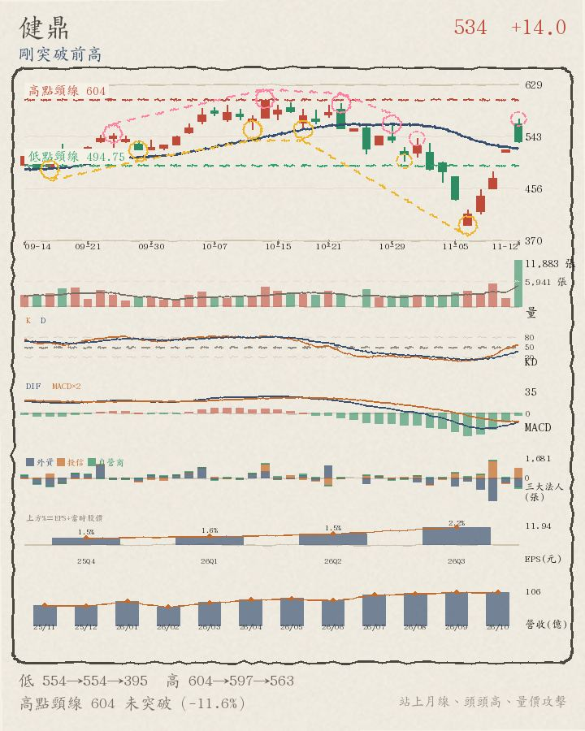
今天帶量收黑、站上月線 519.625，離高點頸線 604 還差 11.8%，高點還在墊高（但底部沒同步墊高）。
- 月線位置：收盤 533 在月線 519.625 之上；5 日線 500.8 也在月線之下（短均在下）；月線走平或向下、5 日線向上
- 量能：成交量是 20 日均量的 2.54 倍，比 20 日均量大不少；收黑卻量增，量價背離
- 關鍵價位：高點頸線 604 還沒突破，差 11.8%；最近轉折高點 563（低於 5.3%）；最近轉折低點 395（高於 34.9%）
- 轉折結構：高點 604、597、563 墊高 3.4%（頭頭高），但低點 554、554、395 沒有同步墊高；還沒確認的轉折低點 10-30 502、11-13 529；還沒確認的轉折高點 11-02 539、11-13 582（圖上虛線小圈）
剛突破前高 成交金額 51.72 億・全榜第 52 名（上市第 40 名）
好條件 0/4：無
不好條件 5/5：站上月線、月線向上、突破頸線、量價攻擊（收紅＋大量）、外資賣超

今天帶量收紅、站上月線 1237，已站上高點頸線 1300，高點還在墊高（但底部沒同步墊高）。
- 月線位置：收盤 1380 在月線 1237 之上；5 日線 1346 也在月線之上（短均在上）；月線向上、5 日線向上
- 量能：成交量是 20 日均量的 1.20 倍，比 20 日均量大不少；收紅又量增，量價配合
- 關鍵價位：高點頸線 1300 已站上；最近轉折高點 1255（高於 10.0%）；最近轉折低點 1075（高於 28.4%）
- 轉折結構：高點 1235、1300、1255 墊高 12.4%（頭頭高），但低點 1155、1145、1075 沒有同步墊高；還沒確認的轉折低點 10-30 1155、11-11 1235；還沒確認的轉折高點 11-09 1390、11-12 1410（圖上虛線小圈）
剛突破前高 成交金額 50.46 億・全榜第 54 名（上市第 41 名）
好條件 1/4：外資買超
不好條件 4/5：站上月線、月線向上、突破頸線、量價攻擊（收紅＋大量）
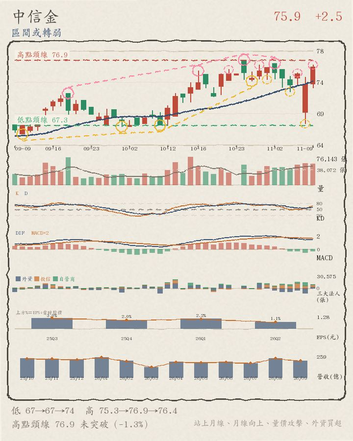
今天帶量收紅、站上月線 74.63，已站上高點頸線 76.9，高點還在墊高（但底部沒同步墊高）。
- 月線位置：收盤 78.7 在月線 74.63 之上；5 日線 75.68 也在月線之上（短均在上）；月線向上、5 日線向上
- 量能：成交量是 20 日均量的 1.42 倍，比 20 日均量大不少；收紅又量增，量價配合
- 關鍵價位：高點頸線 76.9 已站上；最近轉折高點 76.2（高於 3.3%）；最近轉折低點 67.5（高於 16.6%）
- 轉折結構：高點 76.9、76.4、76.2 墊高 4.7%（頭頭高），但低點 67.3、73.8、67.5 沒有同步墊高；還沒確認的轉折低點 11-04 72.2、11-11 72.6；還沒確認的轉折高點 11-05 75、11-13 79.8（圖上虛線小圈）
區間或轉弱 成交金額 47.2 億・全榜第 55 名（上市第 42 名）
好條件 2/4：在月線之下、月線下彎
不好條件 1/5：外資賣超
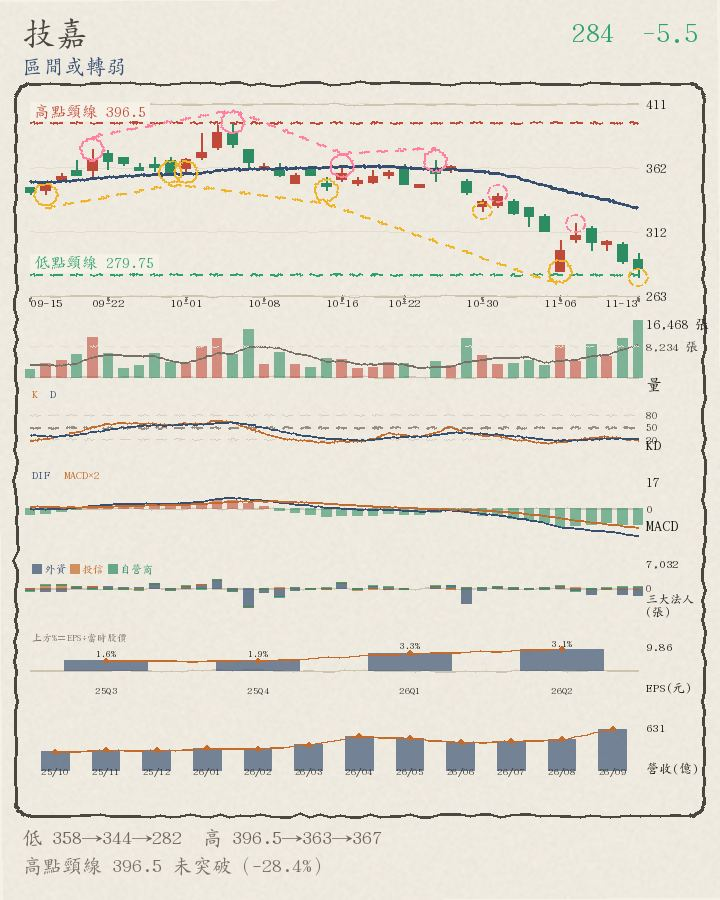
今天帶量收黑、跌破月線 330.725，離高點頸線 396.5 還差 28.4%，轉折還沒走出明顯方向。
- 月線位置：收盤 284 在月線 330.725 之下；5 日線 298.5 也在月線之下（短均在下）；月線走平或向下、5 日線走平或向下
- 量能：成交量是 20 日均量的 3.01 倍，比 20 日均量大不少；收黑卻量增，量價背離
- 關鍵價位：高點頸線 396.5 還沒突破，差 28.4%；最近轉折高點 367（低於 22.6%）；最近轉折低點 282（高於 0.7%）
- 轉折結構：低點 358.5、344.5、282 與高點 396.5、363、367 都沒有明顯遞增，屬於區間震盪或轉弱；還沒確認的轉折低點 10-30 328.5、11-13 277.5；還沒確認的轉折高點 11-02 342、11-09 319（圖上虛線小圈）
區間或轉弱 成交金額 46.16 億・全榜第 56 名（上市第 43 名）
好條件 3/4：在月線之下、月線下彎、外資買超
不好條件 0/5：無

今天收紅、但成交量比平均少、跌破月線 43.31，離高點頸線 56.2 還差 28.9%，轉折還沒走出明顯方向。
- 月線位置：收盤 39.95 在月線 43.31 之下；5 日線 39.65 也在月線之下（短均在下）；月線走平或向下、5 日線走平或向下
- 量能：成交量是 20 日均量的 0.84 倍，比 20 日均量少很多；收紅但量縮，量價背離
- 關鍵價位：高點頸線 56.2 還沒突破，差 28.9%；最近轉折高點 49.7（低於 19.6%）；最近轉折低點 34.2（高於 16.8%）
- 轉折結構：低點 48.55、45.65、34.2 與高點 52.2、56.2、49.7 都沒有明顯遞增，屬於區間震盪或轉弱；還沒確認的轉折低點 11-12 38.85；還沒確認的轉折高點 11-10 41.4、11-12 43.3（圖上虛線小圈）
區間或轉弱 成交金額 44.6 億・全榜第 57 名（上市第 44 名）
好條件 3/4：在月線之下、月線下彎、外資買超
不好條件 1/5：量價攻擊（收紅＋大量）
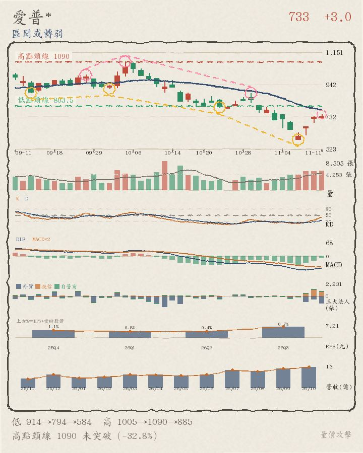
今天帶量收紅、跌破月線 759.2，離高點頸線 1090 還差 34.3%，轉折還沒走出明顯方向。
- 月線位置：收盤 716 在月線 759.2 之下；5 日線 704.8 也在月線之下（短均在下）；月線走平或向下、5 日線向上
- 量能：成交量是 20 日均量的 1.53 倍，比 20 日均量大不少；收紅又量增，量價配合
- 關鍵價位：高點頸線 1090 還沒突破，差 34.3%；最近轉折高點 885（低於 19.1%）；最近轉折低點 584（高於 22.6%）
- 轉折結構：低點 914、794、584 與高點 1005、1090、885 都沒有明顯遞增，屬於區間震盪或轉弱；還沒確認的轉折低點 11-12 673；還沒確認的轉折高點 11-12 766（圖上虛線小圈）
剛突破前高 成交金額 44.06 億・全榜第 59 名（上市第 45 名）
好條件 1/4：外資買超
不好條件 3/5：站上月線、月線向上、突破頸線
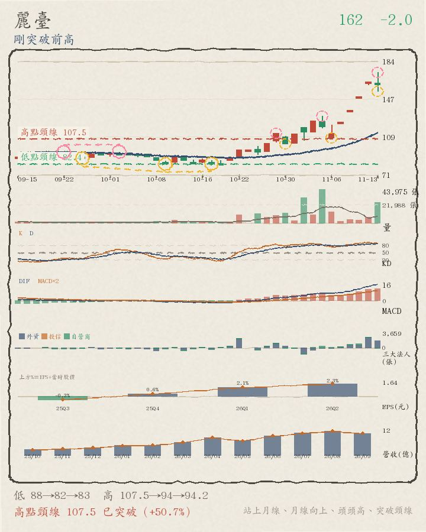
今天帶量收黑、站上月線 113.115，已站上高點頸線 107.5，高點還在墊高（但底部沒同步墊高）。
- 月線位置：收盤 162 在月線 113.115 之上；5 日線 147.1 也在月線之上（短均在上）；月線向上、5 日線向上
- 量能：成交量是 20 日均量的 2.85 倍，比 20 日均量大不少；收黑卻量增，量價背離
- 關鍵價位：高點頸線 107.5 已站上；最近轉折高點 94.2（高於 72.0%）；最近轉折低點 82.6（高於 96.1%）
- 轉折結構：高點 107.5、94、94.2 墊高 84.2%（頭頭高），但低點 87.8、82.2、82.6 沒有同步墊高；還沒確認的轉折低點 11-06 108、11-13 154.5；還沒確認的轉折高點 11-05 130、11-13 173.5（圖上虛線小圈）
區間或轉弱 成交金額 41.96 億・全榜第 60 名（上市第 46 名）
好條件 2/4：在月線之下、月線下彎
不好條件 1/5：外資賣超

今天收紅、但成交量比平均少、跌破月線 1681，離高點頸線 2685 還差 43.4%，轉折還沒走出明顯方向。
- 月線位置：收盤 1520 在月線 1681 之下；5 日線 1513 也在月線之下（短均在下）；月線走平或向下、5 日線走平或向下
- 量能：成交量是 20 日均量的 0.87 倍，比 20 日均量少一些；收紅但量縮，量價背離
- 關鍵價位：高點頸線 2685 還沒突破，差 43.4%；最近轉折高點 2080（低於 26.9%）；最近轉折低點 1295（高於 17.4%）
- 轉折結構：低點 1930、1810、1295 與高點 2375、2685、2080 都沒有明顯遞增，屬於區間震盪或轉弱；還沒確認的轉折低點 11-02 1555；還沒確認的轉折高點 11-03 1675、11-12 1630（圖上虛線小圈）
高點墊高、底部不穩 成交金額 41.69 億・全榜第 61 名（上市第 47 名）
好條件 2/4：在月線之下、月線下彎
不好條件 1/5：外資賣超

今天收紅、但成交量比平均少、跌破月線 180.05，離高點頸線 199.5 還差 14.3%，高點還在墊高（但底部沒同步墊高）。
- 月線位置：收盤 171 在月線 180.05 之下；5 日線 171 也在月線之下（短均在下）；月線走平或向下、5 日線走平或向下
- 量能：成交量是 20 日均量的 0.64 倍，比 20 日均量少很多；收紅但量縮，量價背離
- 關鍵價位：高點頸線 199.5 還沒突破，差 14.3%；最近轉折高點 199.5（低於 14.3%）；最近轉折低點 152（高於 12.5%）
- 轉折結構：高點 190.5、194.5、199.5 墊高 4.7%（頭頭高），但低點 182.5、173.5、152 沒有同步墊高；還沒確認的轉折低點 10-30 179.5、11-13 169；還沒確認的轉折高點 11-09 174.5、11-12 181（圖上虛線小圈）
區間或轉弱 成交金額 38.29 億・全榜第 63 名（上市第 48 名）
好條件 2/4：在月線之下、月線下彎
不好條件 1/5：外資賣超

今天收黑、成交量也比平均少、跌破月線 309.675，離高點頸線 349 還差 20.8%，轉折還沒走出明顯方向。
- 月線位置：收盤 276.5 在月線 309.675 之下；5 日線 289.6 也在月線之下（短均在下）；月線走平或向下、5 日線走平或向下
- 量能：成交量是 20 日均量的 0.94 倍，比 20 日均量少一些
- 關鍵價位：高點頸線 349 還沒突破，差 20.8%；最近轉折高點 338（低於 18.2%）；最近轉折低點 272（高於 1.7%）
- 轉折結構：低點 311、311、272 與高點 349、337.5、338 都沒有明顯遞增，屬於區間震盪或轉弱；還沒確認的轉折低點 10-30 308、11-13 276.5；還沒確認的轉折高點 11-09 304、11-10 304（圖上虛線小圈）
區間或轉弱 成交金額 38.07 億・全榜第 65 名（上市第 49 名）
好條件 2/4：在月線之下、月線下彎
不好條件 1/5：外資賣超

今天收紅、但成交量比平均少、跌破月線 62.7，離高點頸線 78.1 還差 27.0%，轉折還沒走出明顯方向。
- 月線位置：收盤 57 在月線 62.7 之下；5 日線 57.78 也在月線之下（短均在下）；月線走平或向下、5 日線走平或向下
- 量能：成交量是 20 日均量的 0.60 倍，比 20 日均量少很多；收紅但量縮，量價背離
- 關鍵價位：高點頸線 78.1 還沒突破，差 27.0%；最近轉折高點 63（低於 9.5%）；最近轉折低點 49.35（高於 15.5%）
- 轉折結構：低點 70.5、63、49.35 與高點 78.1、73、63 都沒有明顯遞增，屬於區間震盪或轉弱；還沒確認的轉折低點 11-11 55.9；還沒確認的轉折高點 11-12 60.4（圖上虛線小圈）
區間或轉弱 成交金額 36.47 億・全榜第 66 名（上市第 50 名）
好條件 2/4：月線下彎、外資買超
不好條件 2/5：站上月線、量價攻擊（收紅＋大量）
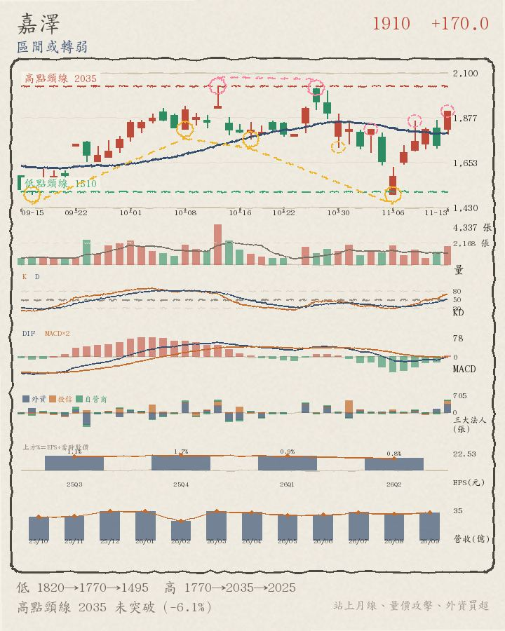
今天帶量收紅、站上月線 1801.5，離高點頸線 2035 還差 6.1%，轉折還沒走出明顯方向。
- 月線位置：收盤 1910 在月線 1801.5 之上；5 日線 1787 也在月線之下（短均在下）；月線走平或向下、5 日線向上
- 量能：成交量是 20 日均量的 1.43 倍，比 20 日均量大不少；收紅又量增，量價配合
- 關鍵價位：高點頸線 2035 還沒突破，差 6.1%；最近轉折高點 2025（低於 5.7%）；最近轉折低點 1495（高於 27.8%）
- 轉折結構：低點 1820、1770、1495 與高點 1770、2035、2025 都沒有明顯遞增，屬於區間震盪或轉弱；還沒確認的轉折低點 10-30 1730；還沒確認的轉折高點 11-10 1860、11-13 1910（圖上虛線小圈）
剛突破前高 成交金額 187.61 億・全榜第 8 名（上櫃第 1 名）
好條件 1/4：外資買超
不好條件 3/5：站上月線、月線向上、量價攻擊（收紅＋大量）

今天收紅、站上月線 136.6，離高點頸線 161.5 還差 12.1%，高點還在墊高（但底部沒同步墊高）。
- 月線位置：收盤 142 在月線 136.6 之上；5 日線 135.3 也在月線之下（短均在下）；月線向上、5 日線向上
- 量能：成交量是 20 日均量的 1.02 倍，跟 20 日均量差不多
- 關鍵價位：高點頸線 161.5 還沒突破，差 12.1%；最近轉折高點 143.5（低於 1.0%）；最近轉折低點 109.5（高於 29.7%）
- 轉折結構：高點 161.5、149、143.5 墊高 4.9%（頭頭高），但低點 113、124、109.5 沒有同步墊高；還沒確認的轉折低點 11-02 122；還沒確認的轉折高點 11-10 140.5、11-12 150.5（圖上虛線小圈）
區間或轉弱 成交金額 160.12 億・全榜第 12 名（上櫃第 2 名）
好條件 2/4：月線下彎、外資買超
不好條件 2/5：站上月線、量價攻擊（收紅＋大量）

今天帶量收紅、站上月線 507.9，離高點頸線 630 還差 9.8%，轉折還沒走出明顯方向。
- 月線位置：收盤 568 在月線 507.9 之上；5 日線 507.4 也在月線之下（短均在下）；月線走平或向下、5 日線向上
- 量能：成交量是 20 日均量的 1.15 倍，比 20 日均量大不少；收紅又量增，量價配合
- 關鍵價位：高點頸線 630 還沒突破，差 9.8%；最近轉折高點 596（低於 4.7%）；最近轉折低點 403.5（高於 40.8%）
- 轉折結構：低點 454、479、403.5 與高點 478、630、596 都沒有明顯遞增，屬於區間震盪或轉弱；還沒確認的轉折低點 10-30 541；還沒確認的轉折高點 10-29 594、11-12 573（圖上虛線小圈）
剛突破前高 成交金額 135.99 億・全榜第 16 名（上櫃第 3 名）
好條件 2/4：月線下彎、外資買超
不好條件 2/5：站上月線、量價攻擊（收紅＋大量）

今天帶量收紅、站上月線 452.4，離高點頸線 530 還差 2.1%，高點還在墊高（但底部沒同步墊高）。
- 月線位置：收盤 519 在月線 452.4 之上；5 日線 457.2 也在月線之上（短均在上）；月線走平或向下、5 日線向上
- 量能：成交量是 20 日均量的 2.00 倍，比 20 日均量大不少；收紅又量增，量價配合
- 關鍵價位：高點頸線 530 還沒突破，差 2.1%；最近轉折高點 513（高於 1.2%）；最近轉折低點 362.5（高於 43.2%）
- 轉折結構：高點 487、530、513 墊高 1.2%（頭頭高），但低點 436.5、399、362.5 沒有同步墊高；還沒確認的轉折低點 10-30 455、11-04 387；還沒確認的轉折高點 11-13 519（圖上虛線小圈）
區間或轉弱 成交金額 106.96 億・全榜第 23 名（上櫃第 4 名）
好條件 3/4：在月線之下、月線下彎、外資買超
不好條件 0/5：無

今天收紅、但成交量比平均少、跌破月線 1235.25，離高點頸線 1835 還差 46.9%，轉折還沒走出明顯方向。
- 月線位置：收盤 974 在月線 1235.25 之下；5 日線 986.8 也在月線之下（短均在下）；月線走平或向下、5 日線走平或向下
- 量能：成交量是 20 日均量的 0.84 倍，比 20 日均量少很多；收紅但量縮，量價背離
- 關鍵價位：高點頸線 1835 還沒突破，差 46.9%；最近轉折高點 1450（低於 32.8%）；最近轉折低點 897（高於 8.6%）
- 轉折結構：低點 1295、1275、897 與高點 1460、1835、1450 都沒有明顯遞增，屬於區間震盪或轉弱；還沒確認的轉折低點 11-12 954；還沒確認的轉折高點 11-12 1080（圖上虛線小圈）
區間或轉弱 成交金額 102.96 億・全榜第 25 名（上櫃第 5 名）
好條件 2/4：在月線之下、月線下彎
不好條件 2/5：量價攻擊（收紅＋大量）、外資賣超
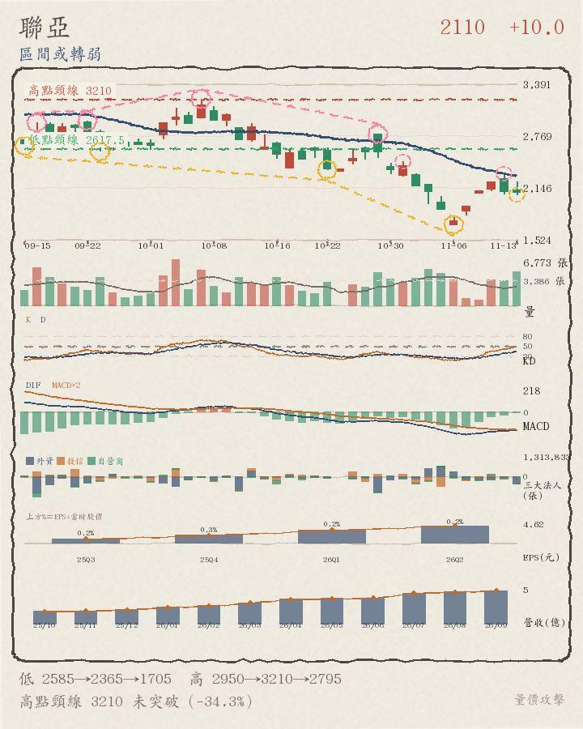
今天帶量收紅、跌破月線 2290，離高點頸線 3210 還差 34.3%，轉折還沒走出明顯方向。
- 月線位置：收盤 2110 在月線 2290 之下；5 日線 2093 也在月線之下（短均在下）；月線走平或向下、5 日線向上
- 量能：成交量是 20 日均量的 1.54 倍，比 20 日均量大不少；收紅又量增，量價配合
- 關鍵價位：高點頸線 3210 還沒突破，差 34.3%；最近轉折高點 2795（低於 24.5%）；最近轉折低點 1705（高於 23.8%）
- 轉折結構：低點 2585、2365、1705 與高點 2950、3210、2795 都沒有明顯遞增，屬於區間震盪或轉弱；還沒確認的轉折低點 11-13 2065；還沒確認的轉折高點 11-02 2465、11-12 2320（圖上虛線小圈）
區間或轉弱 成交金額 90.12 億・全榜第 30 名（上櫃第 6 名）
好條件 3/4：在月線之下、月線下彎、外資買超
不好條件 0/5：無

今天帶量收黑、跌破月線 1304.75，離高點頸線 1750 還差 34.9%，轉折還沒走出明顯方向。
- 月線位置：收盤 1140 在月線 1304.75 之下；5 日線 1199 也在月線之下（短均在下）；月線走平或向下、5 日線走平或向下
- 量能：成交量是 20 日均量的 1.76 倍，比 20 日均量大不少；收黑卻量增，量價背離
- 關鍵價位：高點頸線 1750 還沒突破，差 34.9%；最近轉折高點 1515（低於 24.8%）；最近轉折低點 1050（高於 8.6%）
- 轉折結構：低點 1320、1310、1050 與高點 1750、1515、1515 都沒有明顯遞增，屬於區間震盪或轉弱；還沒確認的轉折低點 11-02 1280、11-13 1135；還沒確認的轉折高點 11-03 1445、11-11 1315（圖上虛線小圈）
區間或轉弱 成交金額 78.42 億・全榜第 33 名（上櫃第 7 名）
好條件 1/4：月線下彎
不好條件 3/5：站上月線、量價攻擊（收紅＋大量）、外資賣超

今天帶量收紅、站上月線 4560.75，離高點頸線 6160 還差 24.2%，轉折還沒走出明顯方向。
- 月線位置：收盤 4670 在月線 4560.75 之上；5 日線 4317 也在月線之下（短均在下）；月線走平或向下、5 日線向上
- 量能：成交量是 20 日均量的 1.59 倍，比 20 日均量大不少；收紅又量增，量價配合
- 關鍵價位：高點頸線 6160 還沒突破，差 24.2%；最近轉折高點 5150（低於 9.3%）；最近轉折低點 3355（高於 39.2%）
- 轉折結構：低點 5090、4995、3355 與高點 5860、6160、5150 都沒有明顯遞增，屬於區間震盪或轉弱；還沒確認的轉折低點 10-30 4390；還沒確認的轉折高點 11-02 4790、11-13 5100（圖上虛線小圈）
區間或轉弱 成交金額 71.88 億・全榜第 37 名（上櫃第 8 名）
好條件 2/4：在月線之下、月線下彎
不好條件 2/5：量價攻擊（收紅＋大量）、外資賣超

今天帶量收紅、跌破月線 406.9，離高點頸線 578 還差 34.9%，轉折還沒走出明顯方向。
- 月線位置：收盤 376.5 在月線 406.9 之下；5 日線 366.5 也在月線之下（短均在下）；月線走平或向下、5 日線向上
- 量能：成交量是 20 日均量的 1.53 倍，比 20 日均量大不少；收紅又量增，量價配合
- 關鍵價位：高點頸線 578 還沒突破，差 34.9%；最近轉折高點 510（低於 26.2%）；最近轉折低點 301（高於 25.1%）
- 轉折結構：低點 477、399.5、301 與高點 535、578、510 都沒有明顯遞增，屬於區間震盪或轉弱；還沒確認的轉折低點 10-30 399.5；還沒確認的轉折高點 11-03 428、11-12 413（圖上虛線小圈）
高點墊高、底部不穩 成交金額 63.76 億・全榜第 42 名（上櫃第 9 名）
好條件 1/4：月線下彎
不好條件 3/5：站上月線、量價攻擊（收紅＋大量）、外資賣超
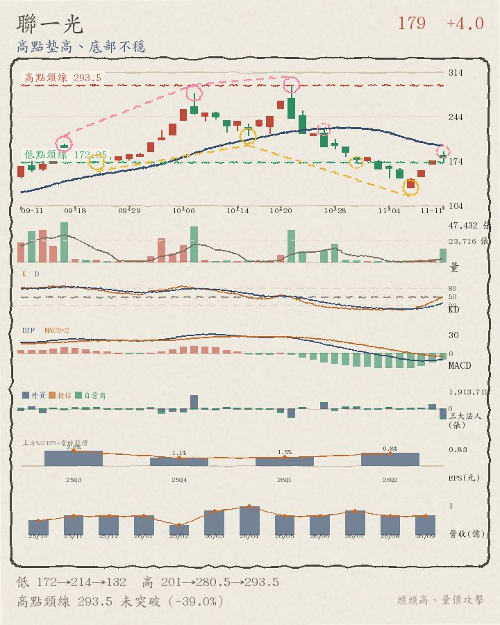
今天帶量收紅、站上月線 194.575，離高點頸線 293.5 還差 32.5%，高點還在墊高（但底部沒同步墊高）。
- 月線位置：收盤 198 在月線 194.575 之上；5 日線 181.6 也在月線之下（短均在下）；月線走平或向下、5 日線向上
- 量能：成交量是 20 日均量的 4.70 倍，比 20 日均量大不少；收紅又量增，量價配合
- 關鍵價位：高點頸線 293.5 還沒突破，差 32.5%；最近轉折高點 293.5（低於 32.5%）；最近轉折低點 132.5（高於 49.4%）
- 轉折結構：高點 201、280.5、293.5 墊高 46.0%（頭頭高），但低點 172.5、213.5、132.5 沒有同步墊高；還沒確認的轉折低點 10-30 172；還沒確認的轉折高點 11-13 209.5（圖上虛線小圈）
區間或轉弱 成交金額 57.87 億・全榜第 46 名（上櫃第 10 名）
好條件 2/4：在月線之下、月線下彎
不好條件 1/5：外資賣超

今天帶量收黑、跌破月線 294.35，離高點頸線 344 還差 14.7%，轉折還沒走出明顯方向。
- 月線位置：收盤 293.5 在月線 294.35 之下；5 日線 310.6 也在月線之上（短均在上）；月線走平或向下、5 日線向上
- 量能：成交量是 20 日均量的 4.09 倍，比 20 日均量大不少；收黑卻量增，量價背離
- 關鍵價位：高點頸線 344 還沒突破，差 14.7%；最近轉折高點 340（低於 13.7%）；最近轉折低點 239.5（高於 22.5%）
- 轉折結構：低點 264.5、270、239.5 與高點 334.5、344、340 都沒有明顯遞增，屬於區間震盪或轉弱；還沒確認的轉折低點 11-06 245.5、11-11 281.5；還沒確認的轉折高點 11-12 338、11-13 338（圖上虛線小圈）
區間或轉弱 成交金額 54.39 億・全榜第 49 名（上櫃第 11 名）
好條件 3/4：在月線之下、月線下彎、外資買超
不好條件 0/5：無

今天收紅、但成交量比平均少、跌破月線 729.75，離高點頸線 1260 還差 50.0%，轉折還沒走出明顯方向。
- 月線位置：收盤 630 在月線 729.75 之下；5 日線 612.4 也在月線之下（短均在下）；月線走平或向下、5 日線走平或向下
- 量能：成交量是 20 日均量的 0.70 倍，比 20 日均量少很多；收紅但量縮，量價背離
- 關鍵價位：高點頸線 1260 還沒突破，差 50.0%；最近轉折高點 1260（低於 50.0%）；最近轉折低點 508（高於 24.0%）
- 轉折結構：低點 875、872、508 與高點 1015、1010、1260 都沒有明顯遞增，屬於區間震盪或轉弱；還沒確認的轉折高點 11-12 663（圖上虛線小圈）
剛突破前高 成交金額 53.9 億・全榜第 50 名（上櫃第 12 名）
好條件 1/4：月線下彎
不好條件 2/5：站上月線、外資賣超
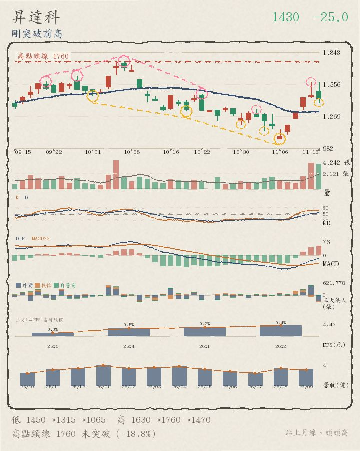
今天帶量收黑、站上月線 1313.25，離高點頸線 1760 還差 18.8%，高點還在墊高（但底部沒同步墊高）。
- 月線位置：收盤 1430 在月線 1313.25 之上；5 日線 1363 也在月線之上（短均在上）；月線走平或向下、5 日線向上
- 量能：成交量是 20 日均量的 2.87 倍，比 20 日均量大不少；收黑卻量增，量價背離
- 關鍵價位：高點頸線 1760 還沒突破，差 18.8%；最近轉折高點 1470（低於 2.7%）；最近轉折低點 1065（高於 34.3%）
- 轉折結構：高點 1630、1760、1470 墊高 7.1%（頭頭高），但低點 1450、1315、1065 沒有同步墊高；還沒確認的轉折低點 11-04 1135、11-13 1390；還沒確認的轉折高點 11-03 1330、11-12 1575（圖上虛線小圈）
區間或轉弱 成交金額 51.27 億・全榜第 53 名（上櫃第 13 名）
好條件 3/4：在月線之下、月線下彎、外資買超
不好條件 0/5：無

今天收紅、跌破月線 1793.25，離高點頸線 2350 還差 30.2%，轉折還沒走出明顯方向。
- 月線位置：收盤 1640 在月線 1793.25 之下；5 日線 1666 也在月線之下（短均在下）；月線走平或向下、5 日線走平或向下
- 量能：成交量是 20 日均量的 0.98 倍，跟 20 日均量差不多
- 關鍵價位：高點頸線 2350 還沒突破，差 30.2%；最近轉折高點 2090（低於 21.5%）；最近轉折低點 1405（高於 16.7%）
- 轉折結構：低點 1785、1865、1405 與高點 2160、2350、2090 都沒有明顯遞增，屬於區間震盪或轉弱；還沒確認的轉折低點 11-12 1635、11-13 1635；還沒確認的轉折高點 11-10 1760、11-12 1765（圖上虛線小圈）
區間或轉弱 成交金額 44.57 億・全榜第 58 名（上櫃第 14 名）
好條件 3/4：在月線之下、月線下彎、外資買超
不好條件 0/5：無

今天收紅、但成交量比平均少、跌破月線 14585，離高點頸線 19895 還差 39.7%，轉折還沒走出明顯方向。
- 月線位置：收盤 12000 在月線 14585 之下；5 日線 12029 也在月線之下（短均在下）；月線走平或向下、5 日線走平或向下
- 量能：成交量是 20 日均量的 0.91 倍，比 20 日均量少一些；收紅但量縮，量價背離
- 關鍵價位：高點頸線 19895 還沒突破，差 39.7%；最近轉折高點 17490（低於 31.4%）；最近轉折低點 10710（高於 12.0%）
- 轉折結構：低點 15975、15500、10710 與高點 19895、18465、17490 都沒有明顯遞增，屬於區間震盪或轉弱；還沒確認的轉折低點 11-13 11795；還沒確認的轉折高點 11-09 11990、11-12 13375（圖上虛線小圈）
區間或轉弱 成交金額 38.87 億・全榜第 62 名（上櫃第 15 名）
好條件 2/4：在月線之下、月線下彎
不好條件 2/5：量價攻擊（收紅＋大量）、外資賣超
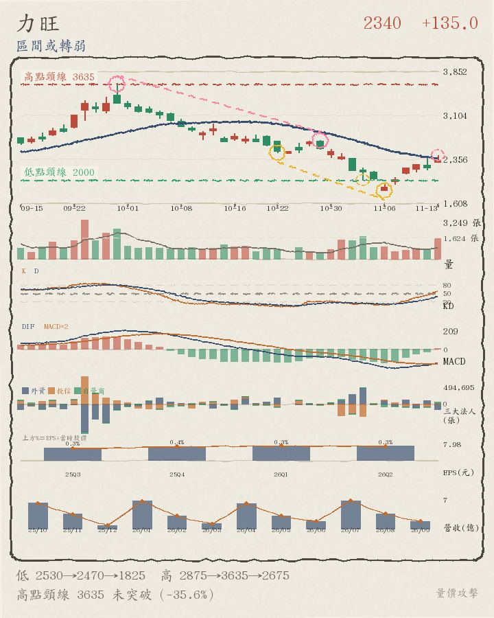
今天帶量收紅、跌破月線 2376.25，離高點頸線 3635 還差 35.6%，轉折還沒走出明顯方向。
- 月線位置：收盤 2340 在月線 2376.25 之下；5 日線 2208 也在月線之下（短均在下）；月線走平或向下、5 日線向上
- 量能：成交量是 20 日均量的 1.80 倍，比 20 日均量大不少；收紅又量增，量價配合
- 關鍵價位：高點頸線 3635 還沒突破，差 35.6%；最近轉折高點 2675（低於 12.5%）；最近轉折低點 1825（高於 28.2%）
- 轉折結構：低點 2530、2470、1825 與高點 2875、3635、2675 都沒有明顯遞增，屬於區間震盪或轉弱；還沒確認的轉折低點 11-04 2005；還沒確認的轉折高點 11-13 2425（圖上虛線小圈）
剛突破前高 成交金額 38.14 億・全榜第 64 名（上櫃第 16 名）
好條件 1/4：月線下彎
不好條件 3/5：站上月線、量價攻擊（收紅＋大量）、外資賣超
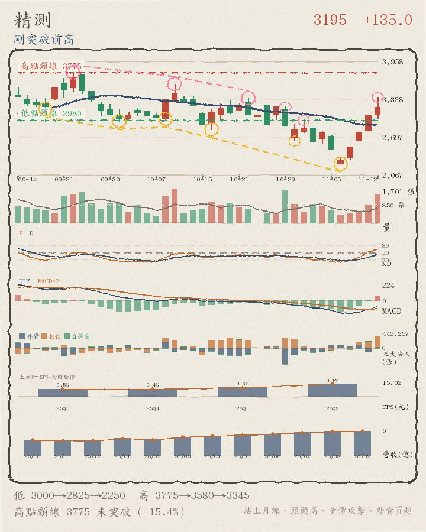
今天帶量收紅、站上月線 2925.75，離高點頸線 3775 還差 11.7%，高點還在墊高（但底部沒同步墊高）。
- 月線位置：收盤 3335 在月線 2925.75 之上；5 日線 2982 也在月線之上（短均在上）；月線走平或向下、5 日線向上
- 量能：成交量是 20 日均量的 1.50 倍，比 20 日均量大不少；收紅又量增，量價配合
- 關鍵價位：高點頸線 3775 還沒突破，差 11.7%；最近轉折高點 3345（低於 0.3%）；最近轉折低點 2250（高於 48.2%）
- 轉折結構：高點 3775、3580、3345 墊高 4.8%（頭頭高），但低點 3000、2825、2250 沒有同步墊高；還沒確認的轉折低點 10-30 2635；還沒確認的轉折高點 11-02 2980、11-13 3505（圖上虛線小圈）
區間或轉弱 成交金額 31.62 億・全榜第 67 名（上櫃第 17 名）
好條件 3/4：在月線之下、月線下彎、外資買超
不好條件 0/5：無

今天收紅、但成交量比平均少、跌破月線 187.075，離高點頸線 238 還差 27.9%，轉折還沒走出明顯方向。
- 月線位置：收盤 171.5 在月線 187.075 之下；5 日線 167.4 也在月線之下（短均在下）；月線走平或向下、5 日線走平或向下
- 量能：成交量是 20 日均量的 0.79 倍，比 20 日均量少很多；收紅但量縮，量價背離
- 關鍵價位：高點頸線 238 還沒突破，差 27.9%；最近轉折高點 223（低於 23.1%）；最近轉折低點 142（高於 20.8%）
- 轉折結構：低點 211、194.5、142 與高點 238、217、223 都沒有明顯遞增，屬於區間震盪或轉弱；還沒確認的轉折高點 11-12 180（圖上虛線小圈）
高點墊高、底部不穩 成交金額 27.26 億・全榜第 68 名（上櫃第 18 名）
好條件 1/4：月線下彎
不好條件 3/5：站上月線、量價攻擊（收紅＋大量）、外資賣超
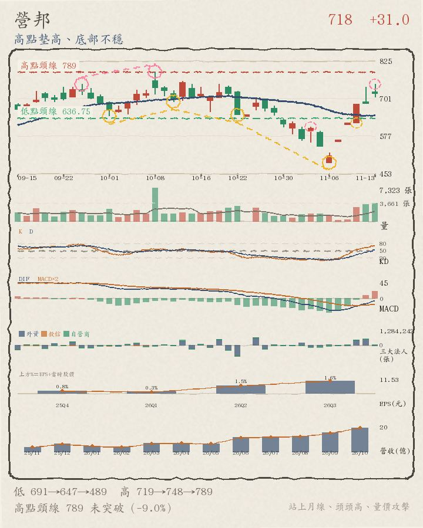
今天帶量收紅、站上月線 644.95，離高點頸線 789 還差 9.0%，高點還在墊高（但底部沒同步墊高）。
- 月線位置：收盤 718 在月線 644.95 之上；5 日線 654.2 也在月線之上（短均在上）；月線走平或向下、5 日線向上
- 量能：成交量是 20 日均量的 2.14 倍，比 20 日均量大不少；收紅又量增，量價配合
- 關鍵價位：高點頸線 789 還沒突破，差 9.0%；最近轉折高點 789（低於 9.0%）；最近轉折低點 489（高於 46.8%）
- 轉折結構：高點 719、748、789 墊高 9.7%（頭頭高），但低點 691、647、489 沒有同步墊高；還沒確認的轉折低點 11-11 620；還沒確認的轉折高點 11-04 608、11-13 748（圖上虛線小圈）
區間或轉弱 成交金額 22.02 億・全榜第 69 名（上櫃第 19 名）
好條件 2/4：在月線之下、月線下彎
不好條件 2/5：量價攻擊（收紅＋大量）、外資賣超

今天帶量收紅、跌破月線 1156.05，離高點頸線 1680 還差 43.3%，轉折還沒走出明顯方向。
- 月線位置：收盤 953 在月線 1156.05 之下；5 日線 978.6 也在月線之下（短均在下）；月線走平或向下、5 日線走平或向下
- 量能：成交量是 20 日均量的 1.07 倍，比 20 日均量大一些；收紅又量增，量價配合
- 關鍵價位：高點頸線 1680 還沒突破，差 43.3%；最近轉折高點 1360（低於 29.9%）；最近轉折低點 864（高於 10.3%）
- 轉折結構：低點 1180、1180、864 與高點 1270、1680、1360 都沒有明顯遞增，屬於區間震盪或轉弱；還沒確認的轉折低點 10-30 1135、11-13 929；還沒確認的轉折高點 11-02 1210、11-12 1060（圖上虛線小圈）
區間或轉弱 成交金額 21.28 億・全榜第 70 名（上櫃第 20 名）
好條件 3/4：在月線之下、月線下彎、外資買超
不好條件 0/5：無

今天收紅、但成交量比平均少、跌破月線 218.325，離高點頸線 291.5 還差 33.8%，轉折還沒走出明顯方向。
- 月線位置：收盤 193 在月線 218.325 之下；5 日線 190 也在月線之下（短均在下）；月線走平或向下、5 日線走平或向下
- 量能：成交量是 20 日均量的 0.69 倍，比 20 日均量少很多；收紅但量縮，量價背離
- 關鍵價位：高點頸線 291.5 還沒突破，差 33.8%；最近轉折高點 279.5（低於 30.9%）；最近轉折低點 162（高於 19.1%）
- 轉折結構：低點 238、241.5、162 與高點 289.5、291.5、279.5 都沒有明顯遞增，屬於區間震盪或轉弱；還沒確認的轉折低點 11-12 184；還沒確認的轉折高點 11-10 198.5、11-12 204.5（圖上虛線小圈）